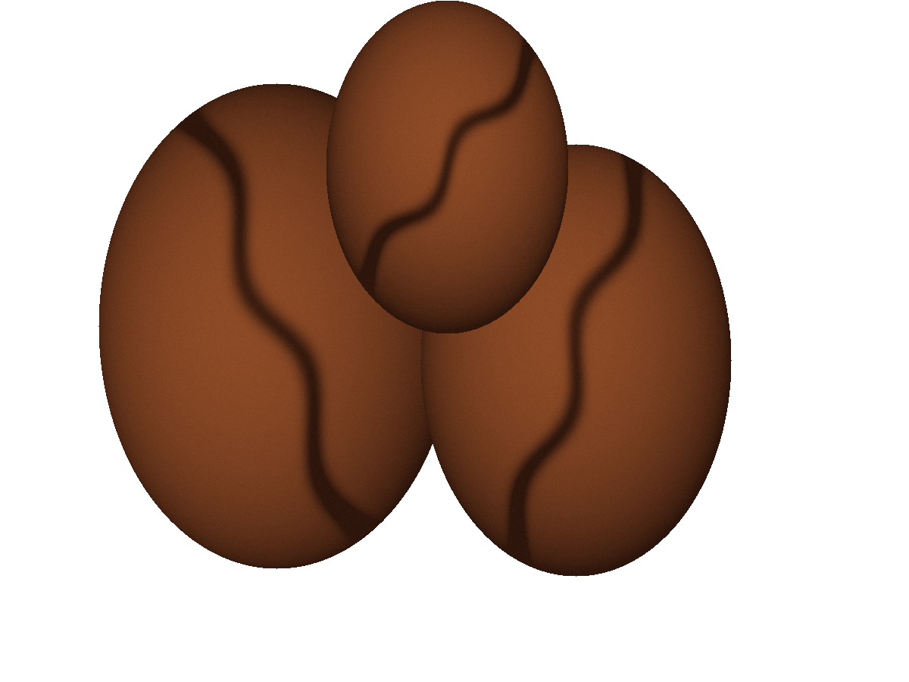

火と、豆と、ほんの数秒。Small batch / Roast study 2026
CINDER
浅煎り / 165°中煎り / 195°深煎り / 225°
焙煎の輪郭中煎りMedium roast

サンプル終点温度195°C焙煎時間 09:30
甘さの、その先の
小さな苦味へ。
ORIGIN / 架空ロット CL–014一粒から、火の記憶を読む。
焙煎シミュレーション
境目を、探る。
温度曲線 / sample195°C / 09:30
投入乾燥反応焙煎終点
味の輪郭 / サンプル指数
丸い甘さと、
丸い甘さと、
ほどよい余韻。
酸味
甘味
苦味
中煎り、195°Cのサンプルを表示しています。
豆の個性を、
急がせない。
火を入れた時間と、そこから生まれる味の関係。いつもの一杯の向こう側を、少しだけ覗くための焙煎室です。
Open the roast.Find your finish.